Tracking Demodulation
Tracking Demodulation
High resolution encoders are expensive, but alternatives exist. You can develop a high-resolution system using a sinusoidal encoder or resolver.
Last month, we covered some of the basics of using cosinusoids to determine position in a motion control application. We translated the magnitudes of two voltages-one representing the sine and the other representing the cosine of position-into an angle indicating position. We obtained these voltages using a tracking device called a resolver. As the motion control industry (and industry in general) reaches for tighter specifications, higher performance, and lower cost, this procedure, called interpolation, is an increasingly popular alternative.
This month, I'll show you how to develop high-resolution position feedback with two cosinusoids that are in quadrature, meaning 90 degrees out of phase. We'll examine two applications in particular (there are more): sinusoidal encoders and resolvers. We will concentrate on the algorithmic techniques common to both, and save the differences for next month. First, I would like to address the interpolation scheme we will use, as well as some possible enhancements.
Voltages to angles

Figure 1 shows two cosinusoids in quadrature. They represent the feedback from a sinusoidal encoder or resolver. We label each of the two cosinusoids according to their phase:
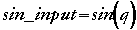
is zero voltage at zero degrees.
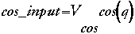
is equal to 1V at zero degrees, which makes it 90 degrees out of phase with the first cosinusoid. Recall that sine and cosine represent ratios based on the length of sides of a triangle as captured within the unit circle. The ratio of these two ratios is equal to another function, called the tangent:
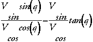
By taking the arctangent of the two inputs, we can find the angular position of the shaft of the encoder:
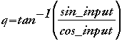
This information will help us track our position and, thereby, velocities in the servo system.
A high resolution arctangent evaluation is a long and difficult calculation for an integer-based processor. Sine and cosine, however, are relatively easy. This, combined with the fact that most of these applications will require a filter of some sort to remove noise (as much as possible) anyway, makes a tracking demodulator an excellent alternative. It's fast, it's lean-it's even possible to put it in an FPGA and offload the processing altogether. Resolution
The resolution of our interpolator depends on a number of factors. Most significantly, it depends on the error in the analog-to-digital converter (ADC).
If we choose a reasonably good 12-bit ADC, we can consider the error equal to its least significant bit for quantization purposes, which is 2-12. This neglects other errors in the system, which I cannot estimate here. However, assuming good layout and adequate electronics, we should be able to account for the absent error by doubling that of the ADC. If we spread the error evenly throughout a single rotation, we have:
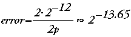
or about 0.014 degrees. Because this is the error, the resolution in a revolution must be approximately 213.65, or 12,855.
A basic system
In its simplest and most direct form, an interpolating system accepts the cosinusoidal inputs at the ADC through suitable buffering and filtering, performs an arctangent, and determines the angle within the necessary resolution.
In many applications, the noise from the integrated gate bipolar transistor's (IGBT) switching, which is transmitted either through proximity or by direct connection, can cause problems in the conversions. To counter this, we could high-pass filter the input. The filter's corner frequency (-3dB point) has to be far enough from our operating frequency to keep the phase flat, but low enough to remove most of the unwanted noise. If your pulse width modulation (PWM) frequency is, say, 16kHz, you could have a second-order filter with corner frequency at 1kHz, or even 2kHz, that would put the stop band between 48dB and 36dB, without sacrificing performance. The choice of the corner frequency-and the form of the filter-is application dependent. For our needs, we'll use a simple Butterworth filter, which combines a reasonably flat pass band and minimal phase distortion. We'll also pick a Q of 0.707 for minimal error at the turnover frequency (In this case, Q is the ratio of the turnover frequency to the 3dB point. The higher the Q, the more distortion at the turnover frequency).
Sometimes, however, this is not the optimal implementation. If board space is critical and the DSP is already working hard, or if memory is at a premium, you might want to go another way.
Tracking devices
Depending on the application, tracking devices can make up for deficiencies in other areas by providing a means to perform complex functions in only a few steps, or with slower elements. A good example of such a device is the tracking ADC. Built with a comparator and a counter, it produces analog-to-digital conversions at a higher speed with slower, less expensive parts.
The heart of this converter is a counter driven by a constant high-speed clock; the output of the counter is connected to a digital-to-analog converter (DAC). When the counter counts up, the magnitude of the voltage at the output of the DAC rises. When the counter goes down, so does the magnitude. To make a tracking ADC, a comparator is introduced ahead of the counter. The comparator has two inputs. If the input from the external circuitry is greater than the output of the DAC, the counter is told to count up; when it is less, the counter is instructed to count down.
Imagine performing analog-to-digital conversion on a sine wave. Depending on the sample rate, the difference between each sample can be very small. Here, it provides a good result quickly, but you need to use it carefully. If you were trying to convert a square wave with a tracking ADC, each edge would require the counter to count all the way up or all the way down, which could result in a very slow system.
A tracking demodulator
The tracking demodulator is similar to the tracking ADC because it operates off the differences between a predicted and an actual value to compute the next value. This algorithm also incorporates a second-order filter in the processing. We will specify the sample rate for this algorithm at 8kHz. Another controller might use a different rate, depending on the update period. The tracking demodulator, like the tracking ADC, compares the input from an analog cosinusoidal device-either an encoder or resolver-with an estimated value derived from previous values. In the block diagram in Figure 2, we subtract our predicted position (the one we generate) from the actual position (the voltages in quadrature returned from the encoder or resolver) using the formula for the difference of two angles:
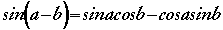
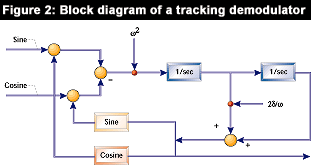
After scaling the differences by a value representing the corner frequency of the filter, we put them through an accumulator. (An accumulator sums: the predicted value is equal to the sum of all past samples plus the latest input.) When accelerating from a stop, the differences between predicted and actual values add up quickly, but as soon as velocity stabilizes, the differences fall to zero. At this point, the output of our first accumulator will be a constant that represents the predicted velocity, in terms of a position displacement per sample cycle. The output of this accumulator is then summed in the second accumulator, which produces position. We also include a scaled addition of velocity (output of the first accumulator) to this final position sum as a correction factor-this is the damping in the second-order transfer function.
An example
In the following example, I disregard the second-order filter function because it isn't necessary for an understanding of the algorithm. Suppose that we step onto a seat on a Ferris wheel at the point closest to the ground. Our speed and position are both zero. Both accumulators are at zero. We will be checking our position every second.
The Ferris wheel operator moves our chair up one increment to seat the next paying guest. This takes him one second. At this point, we compare our actual position with our predicted position. Our predicted position is zero; we had been sitting motionless near the ground and all our accumulators had decayed to zero. So on our first comparison, we use the previous formula to calculate a difference. That first difference is placed in the first accumulator and subsequently added to the second accumulator. The output of the second accumulator is our new position.
One second later, the Ferris wheel moves again, and a new passenger gets on. We take the sine and cosine of our estimated position and compare it to our sine and cosine inputs. The difference is added to the first accumulator, which is then added to the second and stored as our new position.
Another passenger gets on. Again, we difference the expected position with the actual, but because in each increment we have moved the same distance in the same amount of time, we find that the expected position is greater. A negative difference is added to the first accumulator to reduce the integral. This smaller value is added to the second accumulator and a new position is produced.
We continue this process with the Ferris wheel moving the same amount each second. Soon the expected position is the same as the actual. Now, we add the first accumulator to the second to estimate position. When we compare, we see no difference. At a constant velocity, the value in the first accumulator stabilizes and does not change. (This is just as it is in a car moving at 60mph. To know how far you have gone you add 88 feet for every second of travel.) The first accumulator integrates acceleration and now represents incremental velocity. Integrating these increments in the second accumulator gives us a reliable position. Because no differences show up between expected and actual position, we are adding zero to the first accumulator and subsequently adding a constant to the second for incremental position change.
Now, the ride is over and the Ferris wheel is slowing. Once again a difference appears; our predicted position is greater than the real position. We are decelerating. This is reflected in the first accumulator, which is reduced, and then in the second accumulator, which shows smaller and smaller position changes.
When we again come to a stop, the differences will eventually clear the first accumulator and, depending on actual position, may clear the second.
This is how you track position with differences between predicted and actual position.
The filter
The filter/demodulator consists of a second-order filter constructed with accumulators. The input samples are scaled to control where the accumulator overflows-if it ever does-to fit the function to applications requiring integration.
We start by determining what value can be added to the accumulator during each sample period to result in an overflow in one second, the amount of time in which the rotor moves. In other words, we are setting up the accumulator for a time constant of one second.
To do this, we must set some constraints on the system. We choose a sample rate for the accumulator of 8kHz, a common value for many applications. We also choose a 16-bit word size, another common value. If 2p = 216 we can know instantly that the value that will overflow our accumulator is:
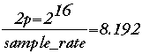
This means that 8.192 = 1Hz. This relationship is also important when using this technique to determine velocity.
The scaling factors
The real magic of this technique is that it can be combined with a second-order filter to help remove some of the transient noise from the switching of the IGBTs. What I have been calling scaling factors are really the coefficients of this filter, and they are very easy to figure out. Because you may opt to implement this on any processor, I'm omitting processor-specific details.
Two scaling functions are involved in this process, both derived directly from the transfer function for a second-order low pass filter. One depends on the corner frequency. The other depends on the Q, or damping, factor. The transfer function is:
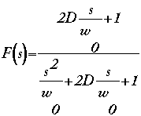
Both will be developed as fractions so that we can multiply rather than divide them, which would be cumbersome and noisy. The first scaling factor is:
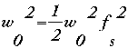
This will be the inverse of the square of frequency in Hertz. We'll call it fr. The next is the damping factor:
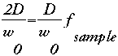
We will call this damp. You see them noted in the block diagram. They occur as simple multiplications. Next month, we'll take the tracking demodulator concept and see how it applies to systems using analog cosinusoids in quadrature to indicate position.
Don Morgan is senior engineer at Ultra Stereo Labs and a consultant with 25 years of experience in signal processing, embedded systems, hardware, and software. Morgan recently completed a book about numerical methods, featuring multi-rate signal processing and wavelets, called Numerical Methods for DSP Systems in C. He is also the author of Practical DSP Modeling, Techniques, and Programming in C, published by John Wiley & Sons, and Numerical Methods for Embedded Systems from M&T. Don's e-mail address is dgm@baykitty.com.
Return to Table of Contents
Loading comments... Write a comment